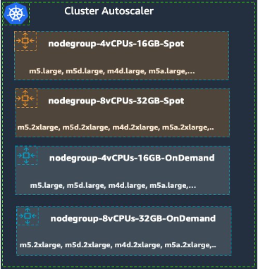

Cost Optimization using EC2 Spot Instances¶
EC2 Spot Best Practices¶
Amazon EMR on Amazon EKS enables you to submit Apache Spark jobs on demand on Amazon Elastic Kubernetes Service (EKS) without provisioning dedicated EMR clusters. With EMR on EKS, you can consolidate analytical workloads with your other Kubernetes-based applications on the same Amazon EKS cluster to improve resource utilization and simplify infrastructure management. Cost Optimization of the underlying infrastructure is often the key requirement for our customers, and this can be achieved by using Amazon EC2 Spot Instances. Spot Instances are spare EC2 capacity and is available at up to 90% discount compared to On-Demand Instance prices. If EC2 needs capacity back for On-Demand Instance usage, Spot Instances can be interrupted. Handling interruptions to build resilient workloads is simple and there are best practices to manage interruption by automation or AWS services like EKS.
This document will describe how to architect with EC2 spot best practices and apply to EMR on EKS jobs. We will also cover Spark features related to EC2 Spot when you run EMR on EKS jobs
EC2 Spot Capacity Provisioning¶
EMR on EKS runs open-source big data framework like Spark on Amazon EKS, so basically when you are run on Spot instances you are, provisioning capacity for the underlying EKS cluster. The key point to remember when you are using Spot instances is instance diversification. There are three ways that EC2 Spot capacity can be provisioned in an EKS cluster.
EKS Managed Nodegroup:
We highly recommend to use Managed Nodegroup for provisioning Spot instances. This requires significantly less operational effort when compared to self-managed nodegroups. The Spot instance interruption is handled proactively using the Instance Rebalancing Recommendation and Spot best practice of using Capacity Optimized Allocation strategy is adopted by default along with other useful features. If you are planning to scale your cluster then Cluster Autoscaler can be used but keep in mind, one caveat with this approach is to maintain same vCPU to memory ratio for nodes defined in a nodegroup.
Karpenter:
An open-source node provisioning tool for Kubernetes which works seamlessly with EMR on EKS. Karpenter can help to improve the efficiency and cost of running workloads. It provisions nodes based on pod resource requirements. The key advantage of Karpenter is flexibility not only in terms of EC2 pricing (Spot/On-Demand) but it also aligns with the Spot best practice of instance diversification, and uses capacity optimized prioritized allocation strategy; more details can be found in this workshop. Karpenter will also be useful to scale the infrastructure which will be further discussed under the scaling section below.
Self-Managed Nodegroup:
EMR on EKS clusters can also run on self-managed nodegroups on EKS. You need to manage the Spot instance lifecycle if there is an interruption by installing an open-source tool named AWS Node Termination Handler. AWS Node Termination Handler ensures that the Kubernetes control plane responds appropriately to events that can cause your EC2 instance to become unavailable, such as EC2 maintenance events, EC2 Spot interruptions, ASG Scale-In, ASG AZ Rebalance, and EC2 Instance Termination via the API or Console. Please remember you need to manage all the software updates manually if you plan to use this. When you are using dynamic allocation the nodegroups needs to autoscale, and if you are using cluster autoscaler then you need to maintain the vCPU to memory ratio for nodes defined in a nodegroup.
Spot Interruption and Spark¶
EC2 Spot instances are suitable for flexible and fault tolerant workloads. Spark is a semi-resilient by design because if the executor fails, new executors are spun up by the driver to continue the job. However, if the driver fails, the entire job fails. For added resiliency, EMR of EKS retries up to 5 times for driver pods so that the k8s can find suitable host and job starts successfully. If k8s fails to find a host, job is cancelled after 15 min timeout. If driver pod fails for other reasons, job is cancelled with an error message for troubleshooting. Hence, we recommend to run Spark driver on On-Demand instances and executors on Spot instances to cost optimize the workloads. You can use PodTemplates to configure this scheduling constraint. NodeSelector can be used as the node selection constraint to run executors on Spot instances as in the example below. This is simple to use and works well with Karpenter too. The pod template for this would look like
apiVersion: v1
kind: Pod
spec:
nodeSelector:
eks.amazonaws.com/capacityType: SPOT
containers:
- name: spark-kubernetes-executor
Node affinity can also be used here, this allows for more flexibility for the constraints defined. We recommend to use ‘hard affinity’ as highlighted in the code below for this purpose. For jobs which have strict SLA and are not suitable to run on Spot we suggest to use NoSchedule taint effect to ensure no Pods are scheduled. The key thing to note here is that the bulk of the compute required in a Spark job runs on executors and if they can be run on EC2 Spot instances you can benefit from the steep discount available with Spot instances.
apiVersion: v1
kind: Pod
metadata:
labels:
spark-role: driver
namespace: emr-eks-workshop-namespace
spec:
affinity:
nodeAffinity:
requiredDuringSchedulingIgnoredDuringExecution:
nodeSelectorTerms:
- matchExpressions:
- key: 'eks.amazonaws.com/capacityType'
operator: In
values:
- ON_DEMAND
apiVersion: v1
kind: Pod
metadata:
labels:
spark-role: executor
namespace: emr-eks-workshop-namespace
spec:
affinity:
nodeAffinity:
requiredDuringSchedulingIgnoredDuringExecution:
nodeSelectorTerms:
- matchExpressions:
- key: 'eks.amazonaws.com/capacityType'
operator: In
values:
- SPOT
When Spot instances are interrupted the executors running on them may lose (if any) the shuffle and cached RDDs which would require re-computation. This requires more compute cycles to be spent which will impact the overall SLA of the EMR on EKS jobs. EMR on EKS has incorporated two new Spark features which can help to address these issues. In the following sections we will discuss them.
Node Decommissioning:
Node decommissioning is a Spark feature that enables the removal of an executor gracefully, by preserving its state before removing it and not scheduling any new jobs on it. This feature is particularly useful when the Spark executors are running on Spot instances, and the Spark executor node is interrupted via a ‘rebalance recommendation’ or ‘instance termination’ notice to reclaim the instance.
Node decommission begins when a Spark executor node receives a Spot Interruption Notice or Spot Rebalance Recommendation signal. The executor node immediately starts the process of decommissioning by sending a message to the Spark driver. The driver will identify the RDD/Shuffle files that it needs to migrate off the executor node in question, and will try to identify another Executor node which can take over the execution. If an executor is identified, the RDD/Shuffle files are copied to the new executor and the job execution continues on the new executor. If all the executors are busy, the RDD/Shuffle files are copied to an external storage.

The key advantage of this process is that it enables block and shuffle data of a Spark executor that receives EC2 Spot Interruption signal to be migrated, reducing the re-computation of the Spark tasks. The reduction in the re-computation for the interrupted Spark tasks improves the resiliency of the system and reduces overall execution time. We recommend to enable node decommissioning feature because it would help to reduce the overall compute cycles when there is a Spot interruption.
This feature is available on Amazon EMR version 6.3 and above. To set up this feature, add this configuration to the Spark job under the executor section:
"spark.decommission.enabled": "true"
"spark.storage.decommission.rddBlocks.enabled": "true"
"spark.storage.decommission.shuffleBlocks.enabled" : "true"
"spark.storage.decommission.enabled": "true"
"spark.storage.decommission.fallbackStorage.path": "s3://<<bucket>>"
The Spark executor logs sample shown below shows the process of decommission and sending message to the driver:
21/05/05 17:41:41 WARN KubernetesClusterSchedulerBackend$KubernetesDriverEndpoint: Received executor 7 decommissioned message
21/05/05 17:41:41 DEBUG TaskSetManager: Valid locality levels for TaskSet 2.0: NO_PREF, ANY
21/05/05 17:41:41 INFO KubernetesClusterSchedulerBackend: Decommission executors: 7
21/05/05 17:41:41 DEBUG TaskSchedulerImpl: parentName: , name: TaskSet_2.0, runningTasks: 10
21/05/05 17:41:41 INFO BlockManagerMasterEndpoint: Mark BlockManagers (BlockManagerId(7, 192.168.82.107, 39007, None)) as being decommissioning.
21/05/05 20:22:17 INFO CoarseGrainedExecutorBackend: Decommission executor 1.
21/05/05 20:22:17 INFO CoarseGrainedExecutorBackend: Will exit when finished decommissioning
21/05/05 20:22:17 INFO BlockManager: Starting block manager decommissioning process...
21/05/05 20:22:17 DEBUG FileSystem: Looking for FS supporting s3a
The Spark driver logs sample below shows the process of looking for an executor to migrate the shuffle data:
22/06/07 20:41:38 INFO ShuffleStatus: Updating map output for 46 to BlockManagerId(4, 192.168.13.235, 34737, None)
22/06/07 20:41:38 DEBUG BlockManagerMasterEndpoint: Received shuffle data block update for 0 46, ignore.
22/06/07 20:41:38 DEBUG BlockManagerMasterEndpoint: Received shuffle index block update for 0 46, updating.
The Spark executor logs sample below shows the process of reusing the shuffle files:
22/06/07 20:42:50 INFO BasicExecutorFeatureStep: Adding decommission script to lifecycle
22/06/07 20:42:50 DEBUG ExecutorPodsAllocator: Requested executor with id 19 from Kubernetes.
22/06/07 20:42:50 DEBUG ExecutorPodsWatchSnapshotSource: Received executor pod update for pod named amazon-reviews-word-count-bfd0a5813fd1b80f-exec-19, action ADDED
22/06/07 20:42:50 DEBUG BlockManagerMasterEndpoint: Received shuffle index block update for 0 52, updating.
22/06/07 20:42:50 INFO ShuffleStatus: Recover 52 BlockManagerId(fallback, remote, 7337, None)
More details on this can be found here
PVC Reuse:
A PersistentVolume is a Kubernetes feature to provide persistent storage to container Pods running stateful workloads, and PersistentVolumeClaim (PVC) is to request the above storage in the container Pod for storage by a user. Apache Spark 3.1.0 introduced the ability to dynamically generate, mount, and remove Persistent Volume Claims, SPARK-29873 for Kubernetes workloads, which are basically volumes mounted into your Spark pods. This means Apache Spark does not have to pre-create any claims/volumes for executors and delete it during the executor decommissioning.
Since Spark3.2, PVC reuse is introduced. In case of a Spark executor is killed due to EC2 Spot interruption or any other failure, then its PVC is not deleted but persisted throughtout the entire job lifetime. It will be reattached to a new executor for a faster recovery. If there are shuffle files on that volume, then they are reused. Without enabling this feature, the owner of dynamic PVCs is the executor pods. It means if a pod or a node became unavailable, the PVC would be terminated, resulting in all the shuffle data were lost, and the recompute would be triggered.

This feature is available started from Amazon EMR version 6.6+. To set it up, you can add these configurations to Spark jobs:
"spark.kubernetes.driver.ownPersistentVolumeClaim": "true"
"spark.kubernetes.driver.reusePersistentVolumeClaim": "true
since Spark3.4 (EMR6.12), Spark driver is able to do PVC-oriented executor allocation which means Spark counts the total number of created PVCs which the job can have, and holds on a new executor creation if the driver owns the maximum number of PVCs. This helps the transition of the existing PVC from one executor to another executor. Add this extra config to improve your PVC reuse performance:
"spark.kubernetes.driver.waitToReusePersistentVolumeClaim": "true"
One key benefit of the PVC reuse is that if any Executor running on EC2 Spot becomes unavailable, the new executor replacement can reuse the shuffle data from the existing PVC, avoiding recompute of the shuffle blocks. Dynamic PVC or persistence volume claim enables ‘true’ decoupling of storage and compute when we run Spark jobs on Kubernetes, as it can be used as a local storage to spill in-process files too. We recommend to enable PVC reuse feature because the time taken to resume the task when there is a Spot interruption is optimized as the files are used in-situ and there is no time required to move the files around.
If one or more of the nodes which are running executors is interrupted the underlying pods gets deleted and the driver gets the update. Note the driver is the owner of those PVCs attaching to executor pods and they are not deleted throughout the job lifetime.
22/06/15 23:25:07 DEBUG ExecutorPodsWatchSnapshotSource: Received executor pod update for pod named amazon-reviews-word-count-9ee82b8169a75183-exec-3, action DELETED
22/06/15 23:25:07 DEBUG ExecutorPodsWatchSnapshotSource: Received executor pod update for pod named amazon-reviews-word-count-9ee82b8169a75183-exec-6, action MODIFIED
22/06/15 23:25:07 DEBUG ExecutorPodsWatchSnapshotSource: Received executor pod update for pod named amazon-reviews-word-count-9ee82b8169a75183-exec-6, action DELETED
22/06/15 23:25:07 DEBUG ExecutorPodsWatchSnapshotSource: Received executor pod update for pod named amazon-reviews-word-count-9ee82b8169a75183-exec-3, action MODIFIED
The ExecutorPodsAllocator tries to allocate new executor pods to replace the ones killed due to interruption. During the allocation it tries to figure out how many of the existing PVC has some files and can be reused.
Scaling EMR on EKS and EC2 Spot¶
One of the key advantages of using Spot instances is it helps to increase the throughput of Big Data workloads at a fraction of the cost of On-Demand instances. There are spark workloads where there is a need to scale the ‘number of executors’ and the infrastructure dynamically. Scaling in a Spark process is done by spawning pod replicas and when they cannot be scheduled in the existing cluster the cluster need to be scaled up by adding more nodes. When you scale up using Spot instances you get the cost benefits of using the lowest price for EC2 Compute and thus increase the throughput of the job at a lower cost, as you can provision more compute capacity (at the same cost of On-Demand instances) to reduce the time taken to process large data sets.
Dynamic Resource Allocation (DRA) enables the Spark driver to spawn the initial number of executors (pod replicas) and then scale up the number until the specified maximum number of executors is met to process the pending tasks. When the executors have no tasks running on them, they are terminated. This enables the nodes deployed in the Amazon EKS cluster to be better utilized while running multiple Spark jobs. DRA has mechanisms to dynamically adjust the resources your application occupies based on the workload. Idle executors are terminated when there are no pending tasks. This feature is available on Amazon EMR version 6.x. More details can be found here.
Scaling of the infrastructure by adding more nodes can be achieved by using Cluster Autoscaler or Karpenter.
Cluster Autoscaler:
Cluster Autoscaler (CAS) is a Kubernetes open-source tool that automatically scale-out the size of the Kubernetes cluster when there are pending pods due to insufficient capacity on existing cluster, or scale-in when there are underutilized nodes in a cluster for extended period of time. The configuration below shows multiple Nodegroups with different vCPU and RAM configurations which adheres to the Spot best practice of diversification. Note each nodegroup has the same vCPU to memory ratio as discussed above. CAS works with EKS Managed and Self-Managed Nodegroups.

Karpenter
Karpenter is an open-source, flexible, high-performance auto-scaler built for Kubernetes. Karpenter automatically launches just the right compute resources to handle your cluster's applications. Karpenter observes aggregate resource requests of un-schedulable pods, computes and launches best-fit new capacity.

The Provisioner CRD’s configuration flexibility is very useful in adopting Spot best practices of diversification. It can include as many Spot Instance types as possible as we do not restrict specific instance types in the configuration. This approach is also future-proof when AWS launches new instance types. It also manages Spot instance lifecycle management through Spot interruptions. We recommend to use Karpenter with Spot Instances as it has faster node scheduling with early pod binding and binpacking to optimize the resource utilization. An example of a Karpenter provisioner with Spot instances below.
apiVersion: karpenter.sh/v1alpha5
kind: Provisioner
metadata:
name: default
spec:
labels:
intent: apps
requirements:
- key: karpenter.sh/capacity-type
operator: In
values: ["spot"]
- key: karpenter.k8s.aws/instance-size
operator: NotIn
values: [nano, micro, small, medium, large]
limits:
resources:
cpu: 1000
memory: 1000Gi
ttlSecondsAfterEmpty: 30
ttlSecondsUntilExpired: 2592000
providerRef:
name: default
EMR on EKS and EC2 Spot Instances: Best Practices¶
In summary, our recommendations are:
- Use EC2 Spot instances for Spark executors and On-Demand instances for drivers.
- Diversify the instances types (Instance family and size) used in a cluster.
- Use a single AZ to launch a cluster to save Inter-AZ data transfer cost and improve job performance.
- Use Karpenter for capacity provisioning and scaling when running EMR on EKS jobs.
- If use Cluster Autoscaler not Karpenter, use EKS Managed Nodegroups.
- If using EKS self-managed nodegroups, enuse the Capacity Optimized Allocation strategy and AWS Node Termination Handler are in place.
- Utilizing Node decommissioning and PVC Reuse techniques can help reduce the time taken to complete EMR on EKS job when EC2 Spot interruptions occur. However, they do not guarantee 100% avoidance of data loss during shuffling interruptions.
- Implementing a Remote Shuffle Service (RSS) solution can enhance job stability and availability if Node decommissioning and PVC Reuse features do not fully meet your requirements.
- Spark's Dynamic Resource Allocation (DRA) feature is particularly useful for reducing job costs, as it releases idle resources if not needed. The cost of EMR on EKS is determined by resource consumption at various stages of a job and is not calculated by the EMR unit price * job run time.
- DRA implementation on EKS is different from Spark on YARN. Check out the details here.
- Decouple Compute and Storage. For example use S3 to store Input/Output data or use RSS to store shuffle data. It allows independent scaling of processing and storage. There is low chance of losing data in case of a Spot interruption too.
- Reduce Spark’s Shuffle Size and Blast Radius. This allows to select more Spot instances for diversification and also reduces the time taken to recompute/move the shuffle files in case of an interruption.
- Automate Spot Interruption handling via existing tools and services.
Conclusion¶
In this document, we covered best practices to cost effectively run EMR on EKS workloads using EC2 Spot Instances. We have outlined three key areas: Provisioning, Interruption Handling, and Scaling, along with the corresponding best practices for each. We aim for this document to offer prescriptive guidance on running EMR on EKS workloads with substantial cost savings through the utilization of Spot instances.